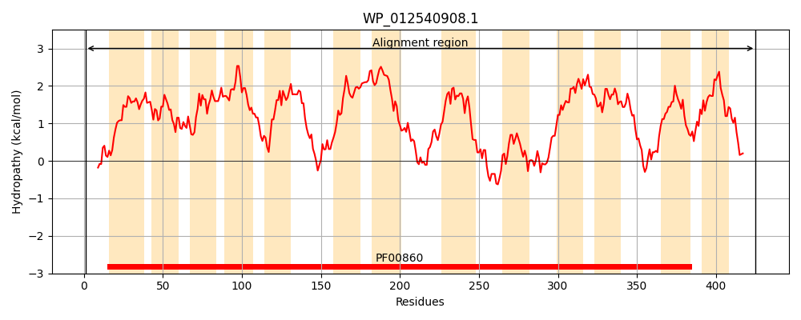
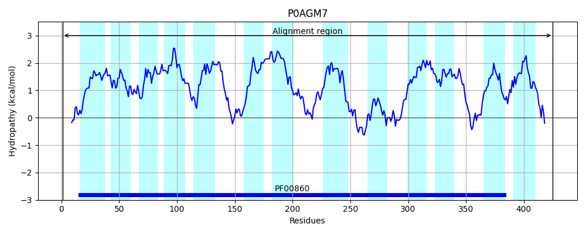
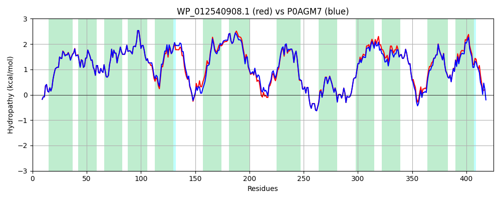

Hit Accession: P0AGM7
Hit TCID: 2.A.40.1.1
Hit Description: gnl|BL_ORD_ID|8870 gnl|TC-DB|P0AGM7|2.A.40.1.1 Uracil permease - Escherichia coli.
Mach Len: 425
e:0.000000
Query TMS Count : 13
Hit TMS Count: 13
TMS-Overlap Score: 12.450000
Predicted Substrates:CHEBI:9882;uracil
BLAST Alignment:
Score: 2010 , Bit scores: 778 bits, E-value: 0.0e+00, Alignment length: 425, Percentage identity: 94
Query: 1 MTRRAIGVSERPPLLQTIPLSLQHLFAMFGATVLVPILFHINPATVLLFNGIGTLLYLFICKGKIPAYLGSSFAFISPVLLLLPLGYEVALGGFIMCGVLFCLVSFIVKKAGTGWLDVMFPPAAMGAIVAVIGLELAGVAANMAGLLPADGQAPDSKTIIISMVTLAVTVFGSVLFRGFLAIIPILIGVLVGYALSFVMGVVDTTPIAEAHWFALPTFYTPRFEWFAIFTILPAALVVIAEHVGHLVVTANIVKRDLIRDPGLHRSMFANGLSTIISGFFGSTPNTTYGENIGVMAITRVYSTWVIGGAAIIAILLSCVGKLAAAIQIIPVPVMGGVSLLLYGVIGASGIRVLIESKVDYSKAQNLILTSVILIIGVSGAKVHIGAAELKGMALATIVGIALSLIFKLISVLRPEEVVLDAADSE 425
MTRRAIGVSERPPLLQTIPLSLQHLFAMFGATVLVP+LFHINPATVLLFNGIGTLLYLFICKGKIPAYLGSSFAFISPVLLLLPLGYEVALGGFIMCGVLFCLVSFIVKKAGTGWLDV+FPPAAMGAIVAVIGLELAGVAA MAGLLPA+GQ PDSKTIIIS+ TLAVTV GSVLFRGFLAIIPILIGVLVGYALSF MG+VDTTPI AHWFALPT YTPRFEWFAI TILPAALVVIAEHVGHLVVTANIVK+DL+RDPGLHRSMFANGLST+ISGFFGSTPNTTYGENIGVMAITRVYSTWVIGGAAI AILLSCVGKLAAAIQ+IP+PVMGGVSLLLYGVIGASGIRVLIESKVDY+KAQNLILTSVILIIGVSGAKV+IGAAELKGMALATIVGI LSLIFKLISVLRPEEVVLDA D++
Sbjct: 1 MTRRAIGVSERPPLLQTIPLSLQHLFAMFGATVLVPVLFHINPATVLLFNGIGTLLYLFICKGKIPAYLGSSFAFISPVLLLLPLGYEVALGGFIMCGVLFCLVSFIVKKAGTGWLDVLFPPAAMGAIVAVIGLELAGVAAGMAGLLPAEGQTPDSKTIIISITTLAVTVLGSVLFRGFLAIIPILIGVLVGYALSFAMGIVDTTPIINAHWFALPTLYTPRFEWFAILTILPAALVVIAEHVGHLVVTANIVKKDLLRDPGLHRSMFANGLSTVISGFFGSTPNTTYGENIGVMAITRVYSTWVIGGAAIFAILLSCVGKLAAAIQMIPLPVMGGVSLLLYGVIGASGIRVLIESKVDYNKAQNLILTSVILIIGVSGAKVNIGAAELKGMALATIVGIGLSLIFKLISVLRPEEVVLDAEDAD 425 | Protein Hydropathy Plots: |
|---|
|  |  |
Pairwise Alignment-Hydropathy Plot:
|
|---|
|  |